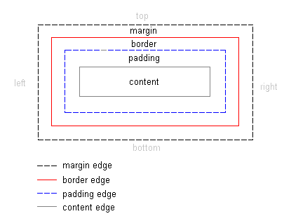
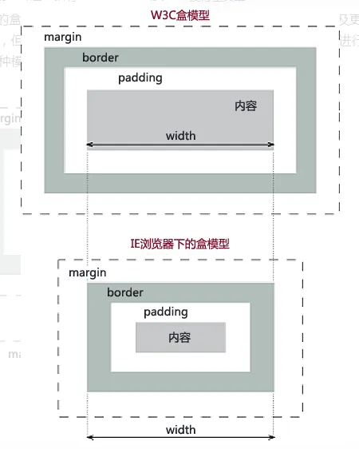
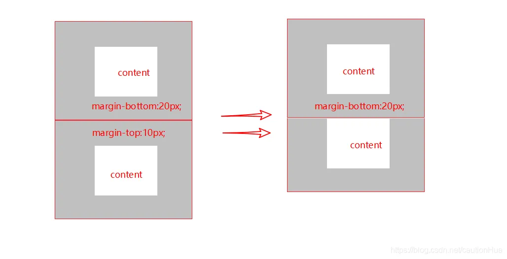
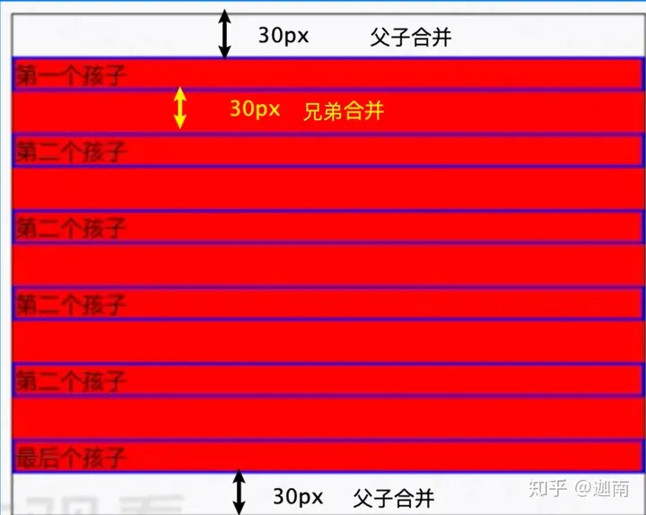
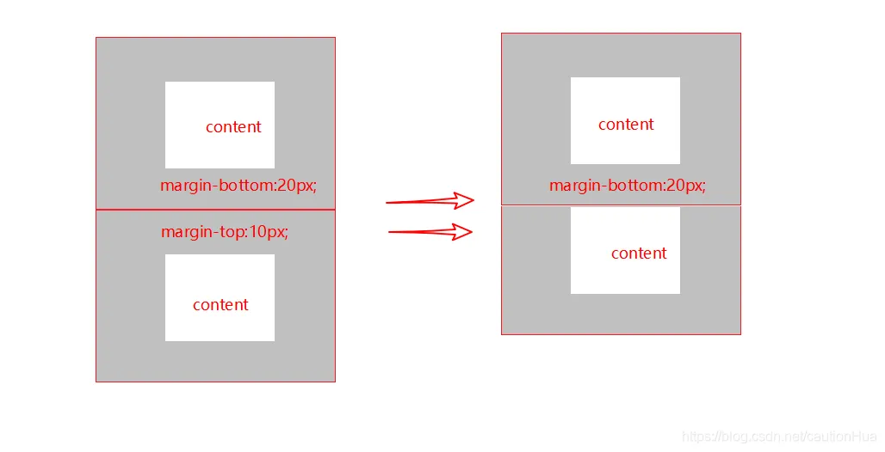
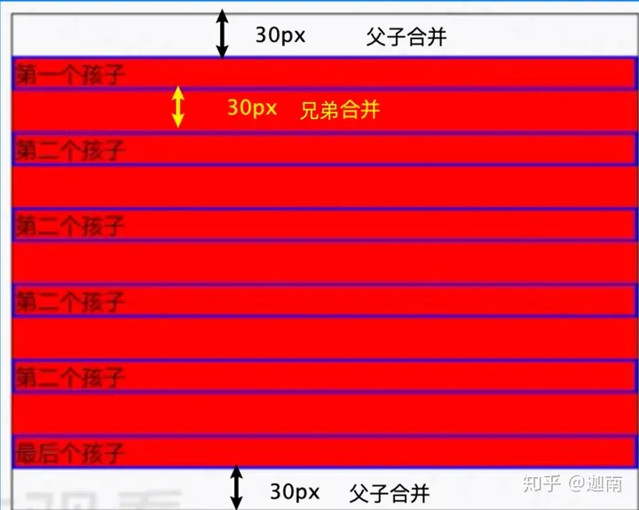

盒模型的介绍
盒模型的组成
盒模型：盒模型又称框模型（Box Model）,包含了元素内容（content）、内边距（padding）、边框（border）、外边距（margin）几个要素。

两种盒模型
盒模型分为content-box和border-box。
内容盒：content-box，以content为边界。
边框盒：border-box，以border为边界。

内容盒：content-box，以content为边界。
边框盒：border-box，以border为边界。
w3c是content-box，ie是border-box。
两种盒模型属性的区别
width和height的设置
content-box
.content-box {
box-sizing:content-box;
width: 100px;
height: 50px;
padding: 10px;
border: 5px solid red;
margin: 15px;
}
content-box数值显示

border-box
.border-box {
box-sizing: border-box;
width: 100px;
height: 50px;
padding: 10px;
border: 5px solid red;
margin: 15px;
}
border-box数值显示

width = content + 2 * padding + 2 * border = 70px + 2 x10px + 2 x5px = 100px
盒模型中margin的合并
margin会出现上下合并的情况


合并的情形可以参考下面两种图，有父子合并和兄弟合并

